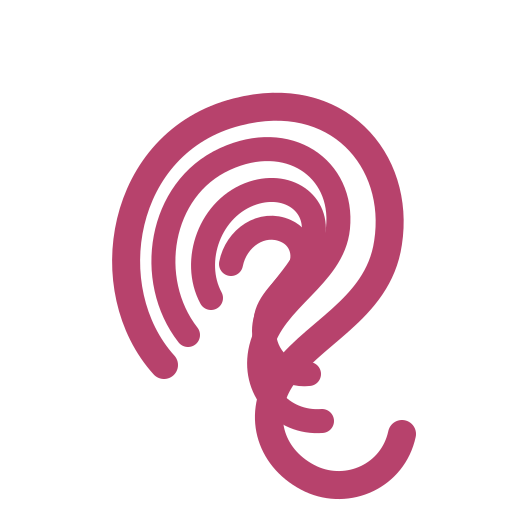
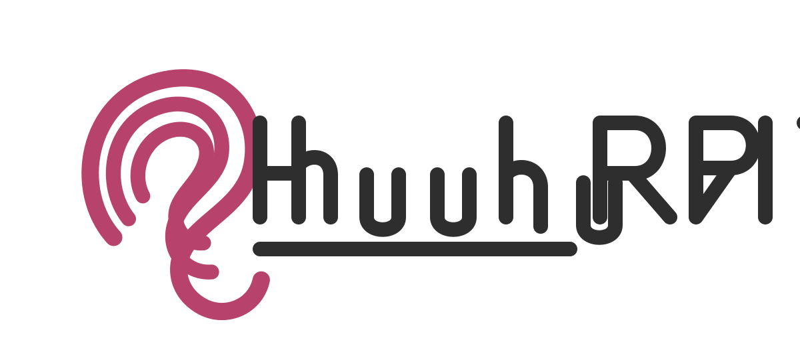
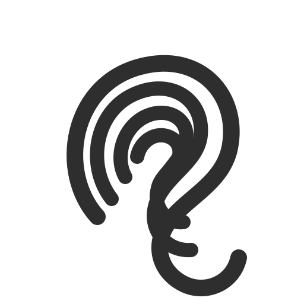
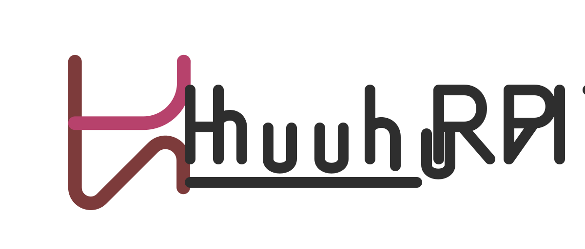
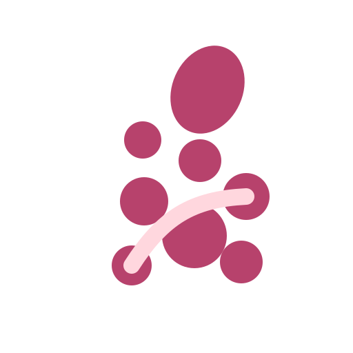
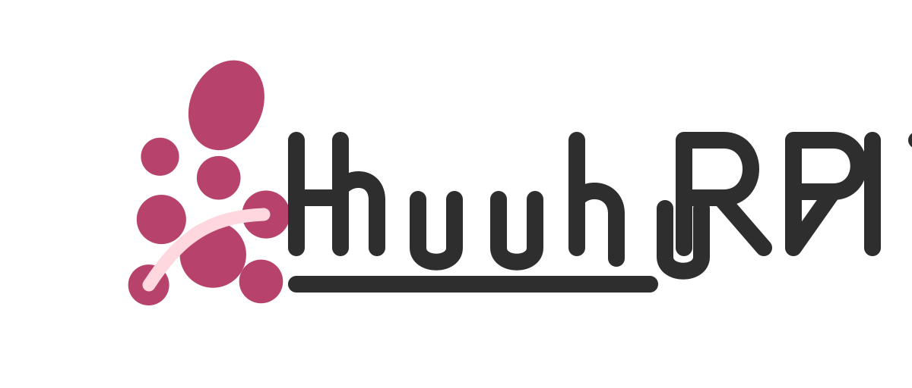
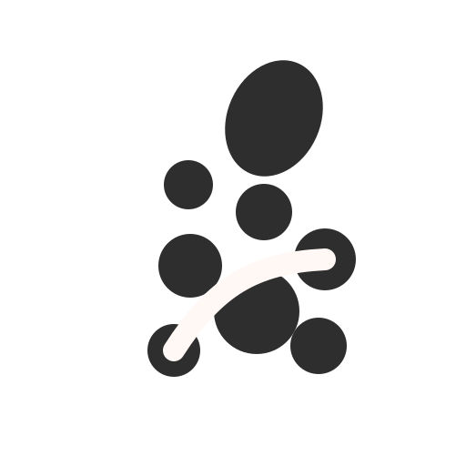

Huella Rosa
Propuestas de identidad para una mujer, una huella y un solo expediente, con o sin señal.
1. Huella lazo
Surcos cálidos que sugieren una huella personal y, al volver, dibujan un lazo de continuidad sin usar símbolos clínicos.
Sobre crema


Sobre frambuesa

2. Vuelta H
Una sola línea hace una H y vuelve sobre su camino: una forma directa de hablar de reconocimiento y regreso.
Sobre crema

Sobre frambuesa
3. Estaciones
La huella se construye con puntos: cada visita es una estación que conserva el mismo expediente.
Sobre crema


Sobre frambuesa

4. Archivo vivo
Anillos abiertos resguardan un punto único: la historia permanece disponible, sin depender de la señal.